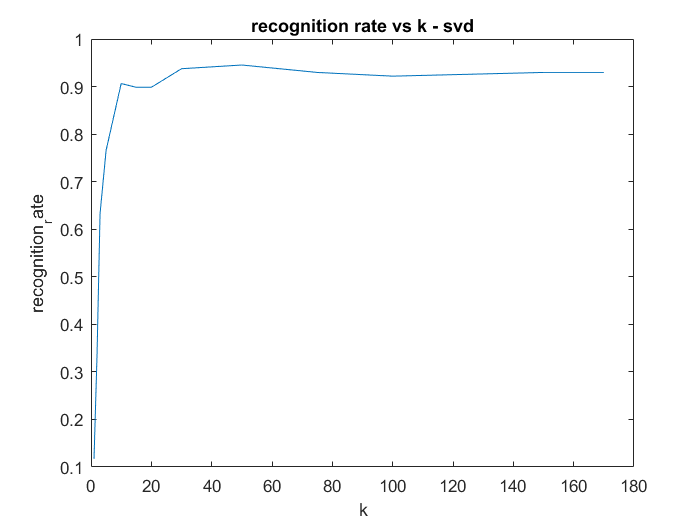
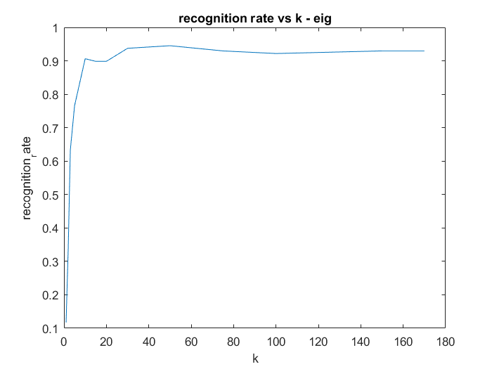
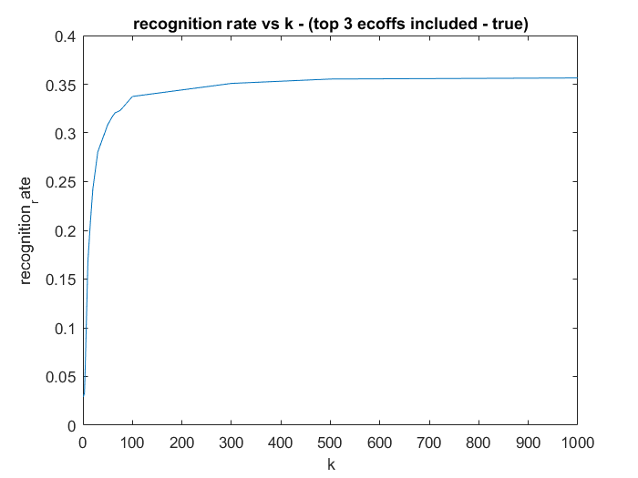
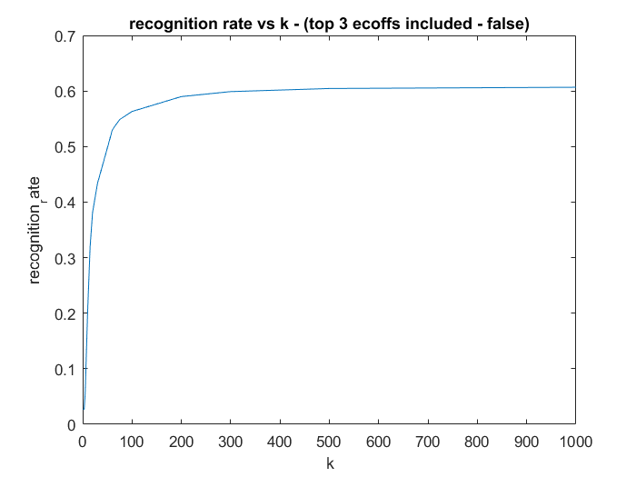

Contents
Q4
tic;
ORL Dataset
The experiements in this section take about 25 seconds to run
dataset = 'ORL'; h = 92; w = 112; num_train_persons = 32; num_train_images = 6; plot_title_format = 'recognition rate vs k - %s'; table_title_format = 'recognition_rate_%s'; evec_funcs = {'svd','eig'}; for i = 1:2 evec_func = evec_funcs{i}; klist = [1,2,3,5,10,15,20,30,50,75,100,150,170]; num_ks = size(klist); num_ks = num_ks(2); recognition_rate = zeros(size(klist)); for i = 1:num_ks [T,C] = frecog(klist(i),dataset,h,w,num_train_persons,num_train_images,evec_func,'true'); recognition_rate(i) = double(C)/double(T); end figure; plot(klist,recognition_rate); xlabel('k'); ylabel('recognition_rate'); title(sprintf(plot_title_format,evec_func)); T = table(klist',recognition_rate'); table_title = sprintf(table_title_format,evec_func); T.Properties.VariableNames = {'k',table_title}; T(:,:) end toc;
ans =
k recognition_rate_svd
___ ____________________
1 0.11719
2 0.33594
3 0.63281
5 0.76563
10 0.90625
15 0.89844
20 0.89844
30 0.9375
50 0.94531
75 0.92969
100 0.92188
150 0.92969
170 0.92969
ans =
k recognition_rate_eig
___ ____________________
1 0.11719
2 0.33594
3 0.63281
5 0.76563
10 0.90625
15 0.89844
20 0.89844
30 0.9375
50 0.94531
75 0.92969
100 0.92188
150 0.92969
170 0.92969
Elapsed time is 25.670093 seconds.
  CroppedYale Dataset
The experiements in this section take about 10-15 minutes to run
tic; dataset = 'CroppedYale'; h = 192; w = 168; num_train_persons = 38; num_train_images = 40; plot_title_format = 'recognition rate vs k - (top 3 ecoffs included - %s)'; table_title_format = 'recognition_rate_top_3_ecoffs_%s'; include_top_ecoffs = {'true','false'}; for i = 1:2 include_top_ecoff = include_top_ecoffs{i}; klist = [1,2,3,5,10,15,20,30,50,60,65,75,100,200,300,500,1000]; num_ks = size(klist); num_ks = num_ks(2); recognition_rate = zeros(size(klist)); for i = 1:num_ks [T,C] = frecog(klist(i),dataset,h,w,num_train_persons,num_train_images,'svd',include_top_ecoff); recognition_rate(i) = double(C)/double(T); end figure; plot(klist,recognition_rate); xlabel('k'); ylabel('recognition_rate'); title(sprintf(plot_title_format,include_top_ecoff)); T = table(klist',recognition_rate'); table_title = sprintf(table_title_format,include_top_ecoff); T.Properties.VariableNames = {'k',table_title}; T(:,:) end toc;
ans =
k recognition_rate_top_3_ecoffs_true
____ __________________________________
1 0.02905
2 0.032402
3 0.031285
5 0.067039
10 0.1676
15 0.20782
20 0.24246
30 0.28045
50 0.30838
60 0.31732
65 0.32067
75 0.32291
100 0.33743
200 0.34413
300 0.35084
500 0.35531
1000 0.35642
ans =
k recognition_rate_top_3_ecoffs_false
____ ___________________________________
1 0.026816
2 0.026816
3 0.026816
5 0.053631
10 0.20223
15 0.31844
20 0.38101
30 0.43352
50 0.49721
60 0.52961
65 0.53631
75 0.5486
100 0.56313
200 0.58994
300 0.59888
500 0.60447
1000 0.6067
Elapsed time is 721.520765 seconds.
 